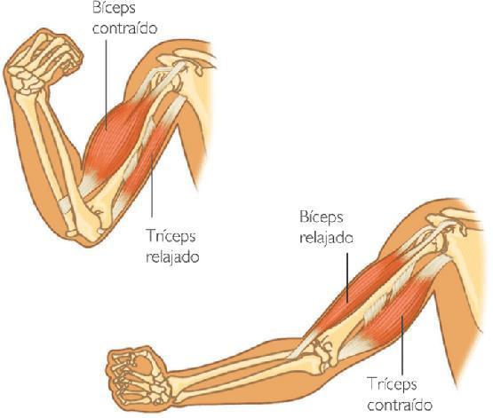
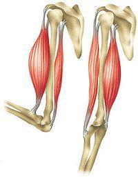
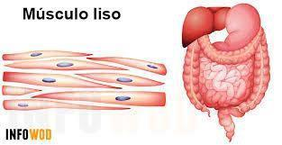
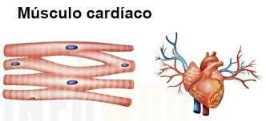
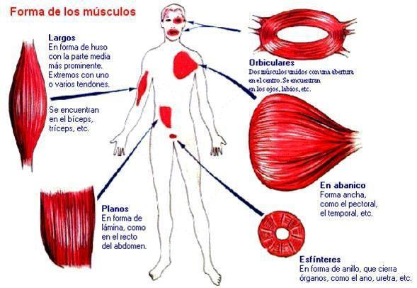

ClinicusMed · Dossiê Clinicus — Padrão de Excelência
Nv. 1
0 XP
🎯 O que você vai conseguir fazer depois desse capítulo
Definir músculo e sua propriedade fundamental
Classificar os músculos por tipo de tecido (estriado esquelético, liso, estriado cardíaco)
Classificar os músculos por situação (superficiais/profundos)
Classificar os músculos por configuração externa (longos/largos/curtos/anulares)
Explicar como os músculos se inserem nos ossos
Listar os anexos dos músculos (vascularização, drenagem linfática, inervação)
💪 Conceito de Músculo
🟢 Definição: músculos são formações anatômicas que gozam da propriedade de se CONTRAIR — ou seja, diminuir seu comprimento sob o influxo de uma excitação.
🔬 Classificação dos Músculos — Por Tecido

Tipos de tecido muscular
Tipo
Característica
Estriado Esquelético
Vermelho, obedece ao controle VOLUNTÁRIO
Liso
Branco, pertence ao sistema da vida vegetativa, funciona FORA do controle voluntário
Estriado Cardíaco
Vermelho, funciona FORA do controle da vontade
🧠 Mnemônico: Esquelético = vermelho + voluntário. Liso = branco + involuntário. Cardíaco = vermelho + involuntário (o "híbrido" — estriado mas sem controle voluntário).
📍 Situação e Número
Aspecto
Detalhe
Situação
Músculos SUPERFICIAIS e músculos PROFUNDOS, de acordo com sua posição
Número
Aproximadamente 501 músculos no ser humano
📐 Configuração Externa — 4 Formas

Músculo Longo

Músculo Largo

Músculo Curto / Anular
Forma
Característica
Localização
Longos
Predominam nos membros
Membros
Largos
Achatados
Paredes das grandes cavidades
Curtos
Movimentos geralmente de pouca amplitude
Sobre as articulações
Anulares
Dispostos ao redor de um orifício, que circunscrevem e cujo fechamento asseguram
Ao redor de orifícios (esfíncteres)
🔗 Inserções dos Músculos

Inserção muscular via tendão
🟢 Ponto de inserção: os músculos se fixam por seus extremos a superfícies chamadas pontos de inserção.
Modo de inserção: é muito raro que um músculo se insira diretamente — geralmente o faz por intermédio de um TENDÃO.
Estrutura
Característica
Tendão
Estrutura fibrosa que prolonga o músculo até seu ponto de inserção. Coloração esbranquiçada, brilhante. Muito resistente, praticamente inextensível
Achar que o músculo cardíaco é voluntário só porque é estriado — é estriado, mas INVOLUNTÁRIO. Confundir a forma "anular" (ao redor de um orifício, esfíncter) com "curto" (pouca amplitude, sobre articulações).
⚡ Questão rápida
Por que faz sentido que o músculo cardíaco seja estriado (como o esquelético), mas funcione de forma involuntária (como o liso)?
Essa combinação "híbrida" de características faz sentido quando você considera as demandas funcionais específicas do coração. A estriação muscular (presente tanto no músculo esquelético quanto no cardíaco) está relacionada à organização altamente ordenada das proteínas contráteis (actina e miosina) em sarcômeros bem definidos — essa organização estriada permite contrações RÁPIDAS, FORTES e PRECISAS, características essenciais tanto para os movimentos voluntários do esqueleto quanto para os batimentos cardíacos vigorosos e ritmados necessários para bombear sangue eficientemente por todo o corpo, continuamente, sem parar. Um músculo liso (não estriado), com sua organização menos ordenada de proteínas contráteis, gera contrações mais lentas e sustentadas — adequadas para funções como a peristalse intestinal ou a regulação do diâmetro dos vasos sanguíneos, mas inadequadas para a demanda de bombeamento rápido e forte exigida pelo coração. Ao mesmo tempo, a natureza INVOLUNTÁRIA do músculo cardíaco (como o liso) é igualmente essencial — o coração precisa continuar batendo consistentemente 24 horas por dia, mesmo durante o sono ou quando a atenção consciente está voltada para outras coisas; se dependesse de controle voluntário consciente (como o músculo esquelético), seria biologicamente catastrófico, já que qualquer lapso de atenção ou perda de consciência interromperia os batimentos cardíacos. Por isso, o músculo cardíaco evoluiu como uma combinação otimizada específica: a estrutura ESTRIADA do esquelético (pra força e velocidade de contração) combinada com o controle INVOLUNTÁRIO do liso (pra funcionamento autônomo e contínuo, independente da vontade consciente) — uma solução biológica sob medida pra sua função vital e ininterrupta.
🧠 Autoexplicação
Por que faz sentido que os músculos se insiram nos ossos principalmente através de TENDÕES (estruturas fibrosas resistentes), ao invés de se conectarem diretamente ao osso?
Essa intermediação através de tendões faz sentido por várias razões biomecânicas importantes. Primeiro, questão de CONCENTRAÇÃO DE FORÇA: um músculo geralmente tem um "ventre" (a parte carnosa, contrátil) relativamente largo, mas precisa transmitir sua força de contração pra um ponto de inserção óssea muitas vezes bem mais específico e concentrado — o tendão funciona como um "afunilador" estrutural, convergindo a força distribuída de todo o ventre muscular numa estrutura mais fina, resistente e concentrada, capaz de ancorar firmemente num ponto ósseo específico sem se espalhar ou perder eficiência de transmissão de força. Segundo, questão de RESISTÊNCIA MECÂNICA: como discutido no capítulo, os tendões são estruturas MUITO resistentes e praticamente inextensíveis — essa característica é crucial, porque, se a conexão entre músculo e osso fosse mais elástica ou menos resistente, uma parte significativa da força gerada pela contração muscular seria "perdida" simplesmente esticando essa conexão elástica, ao invés de ser efetivamente transmitida ao osso para gerar movimento articular real. Terceiro, questão de ESPAÇO E FLEXIBILIDADE POSICIONAL: os tendões, sendo estruturas mais finas e flexíveis que o próprio ventre muscular, permitem que a força de um músculo relativamente distante (as vezes localizado bem longe da articulação que ele efetivamente movimenta) seja transmitida através de espaços anatômicos mais estreitos e ao redor de estruturas ósseas ou articulares interpostas — como ocorre, por exemplo, com os tendões longos que cruzam o punho para mover os dedos, permitindo que o "motor" (ventre muscular) fique localizado no antebraço, mais volumoso, enquanto o tendão fino se estende até o ponto de inserção nos dedos, otimizando a distribuição de massa muscular ao longo do membro. Essa organização "motor central + transmissão via tendão fino" é uma solução biomecânica eficiente que se repete por todo o corpo.
⚠️ Onde todo mundo escorrega
Achar que todo músculo estriado é voluntário — o cardíaco é estriado, mas INVOLUNTÁRIO
Confundir as 4 formas de configuração externa — longos (membros), largos (cavidades), curtos (articulações), anulares (orifícios)
Esquecer que a inserção muscular é RARAMENTE direta — geralmente via tendão
Esquecer os 3 anexos musculares: vascularização (arterial+venosa), drenagem linfática, inervação
📚 Se você só puder lembrar de 8 coisas
Músculo: formação anatômica que se contrai (diminui comprimento) sob excitação
🩺 Caso Clínico Progressivo — Tendinite do Manguito Rotador
Vamos acompanhar um pintor de 45 anos com dor crônica no ombro, relacionando o caso à estrutura e função dos tendões musculares. O caso evolui em 3 níveis — clica em cada um pra ver como as coisas vão se desenrolando.
🃏 Flashcards — SM-2 real + interface Anki
O sistema guarda, no seu navegador, quais cards você já sabe bem e quais precisam voltar mais cedo — cada vez que você avalia um card, ele recalcula quando ele deve voltar.
Cartão 1 / 0Dominados: 0
PERGUNTA
RESPOSTA
✅ Banco de Questões Comentadas
10 questões, do mais básico ao mais puxado. Escolhe uma alternativa, depois clica em "Ver comentário completo" — vale a pena ler até quando você acerta, porque o comentário explica cada alternativa, não só a certa.
🎮 Quiz Rápido
🖼️ Atlas de Imagens — Miologia
Todas as imagens desse capítulo, reunidas num só lugar pra revisão rápida.